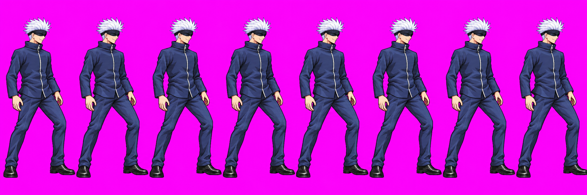
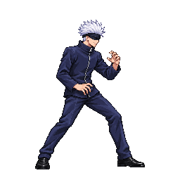

GCD Tourney · feedback only · 15 October 2026
Two idle candidates need your direction
Both candidates remain on hold. View the full strips and approved references below, then reply in the Codex chat with your feedback.
Swipe each strip sideways to see all eight poses. Images use independent display sizes for readability: this page is for pose feedback, not a same-scale anatomy comparison or an in-game preview. Tap “Open full image” to zoom.
Gojo · idle08
HOLD — pose feedbackAll eight poses have both hands down and an upright torso. The requested reference has an open-hand guard and wider stance. The final shoe also reaches the source edge.


Approved combat stance

Your feedback: describe the hand position, torso lean and stance you want. Idle remains unresolved; another generation call is not currently authorized.
Source and audit details
Exact source from codex/gojo-run-def @ a3ca7b5. The one extra authorized call is spent. Astra inspected all eight source poses and returned HOLD. No packed-atlas scale pass or approval.
Goku · idle02
HOLD — scale decisionThe body-only estimate is about 180 ±10 px versus the approved neutral reference at 207 ±4 px. All three attempts are used. This idle cannot become an animation anchor while the scale hold remains.

Approved title-style reference v02

Your decision: authorize additional attempts or request a different correction approach. Give your direction in the Goku–Luffy chat; this page records no approvals.
Source and review details
Exact idle source from art/goku-refs @ 3614ef0, assembled into eight 256 px cells. Approved reference is title-style v02 only. Idle02 remains unapproved and has not passed packed-atlas anatomy checks.